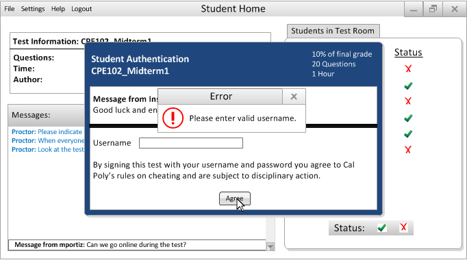

After a proctor has begun to administer a test, the student is prompted with an authentication screen to remind him of the cheating policy, and ask for an electronic signature. This screen is shown below.

Figure 2.4.2.1.1: Student Authentication
This shows the student some basic information about the exam he is about to take, and also a custom message provided by the Instructor. If a student selects "Agree" without providing the valid username, the following dialog appears.

Figure 2.4.2.1.2: Student Invalid Authentication
If the student provides the correct username, the test taking process is Authenticated, and the student may begin taking the test.
Figure 2.4.2.1.2: Student Valid Authentication